环境搭建
Hi3516CV610环境搭建指南
- 开发平台：
- 服务器：Ubuntu 22.04
- 编译环境搭建有两种方式，一种是直接使用预置的docker镜像，已经预置好编译工具链和编译依赖的相关工具，可以直接使用；另外一种是基于虚拟机搭建编译环境。
1、docker镜像环境搭建
- 前提：下载Hi3516CV610编译环境docker镜像
- 注意：如果是在WSL中，Docker Desktop可能未启动，需要先在WSL中启动，命令是
sudo dockerd - 下载完Hi3516CV610编译环境docker镜像（hi3516cv610_docker.tar.gz）后将其传到Ubuntu系统下，然后执行以下指令。
- 加载刚刚下载的hi3516cv610_docker.tar.gz镜像
sudo docker load -i hi3516cv610_docker.tar.gz sudo docker images sudo docker run -it hi3516cv610_docker bash
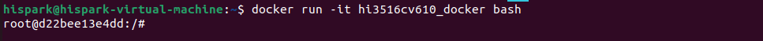
- 然后进入/root目录下面拉取Hi3516CV610社区代码
cd ~ git clone https://gitcode.com/HiSpark/Hi3516CV610.git cd Hi3516CV610 git submodule init git submodule update
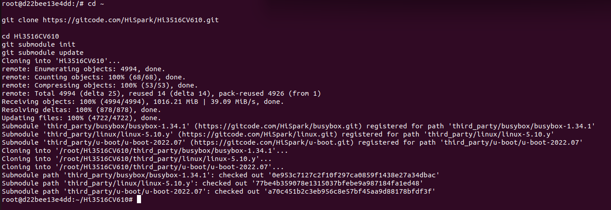
- 紧接着进入 prebuilts/目录解压交叉编译工具链
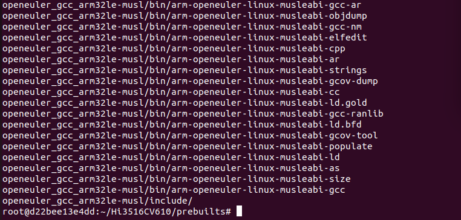
- 交叉编译工具链已经添加到 ~/.bashrc里面了，输入下面指令查看是否生效
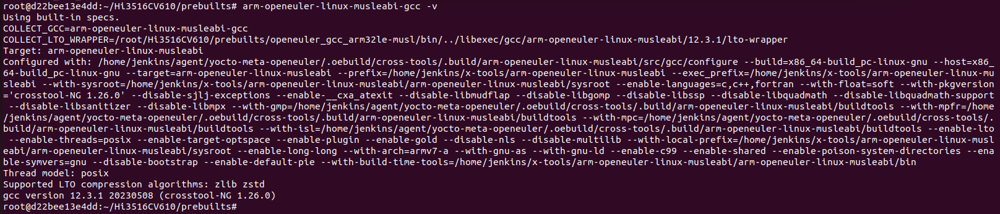
- 至此Hi3516CV610社区版SDK的编译环境已经搭建完成
2、非docker镜像环境搭建
- 前提：开发者有18.04以上版本的Ubuntu系统，没有Ubuntu系统的开发者可先看第4章
2.1 基础环境搭建
- 安装deb软件包及后续所用工具包
sudo apt-get update -y sudo apt-get install -y ## 如果是ubuntu20.04系统请直接安装python3.9，如果是ubuntu18.04请改为安装python3.8，这里是ubuntu22.04下面直接安装python3即可。 sudo apt-get install -y apt-utils binutils bison flex bc build-essential make mtd-utils gcc-arm-linux-gnueabi u-boot-tools python3 python3-pip git zip unzip curl wget gcc g++ ruby dosfstools mtools default-jre default-jdk scons python3-distutils perl openssl libssl-dev cpio git-lfs m4 ccache zlib1g-dev tar rsync liblz4-tool genext2fs binutils-dev device-tree-compiler e2fsprogs git-core gnupg gnutls-bin gperf lib32ncurses5-dev libffi-dev zlib* libelf-dev libx11-dev libgl1-mesa-dev lib32z1-dev xsltproc x11proto-core-dev libc6-dev-i386 libxml2-dev lib32z-dev libdwarf-dev sudo apt-get install -y grsync xxd libglib2.0-dev libpixman-1-dev kmod jfsutils reiserfsprogs xfsprogs squashfs-tools pcmciautils quota ppp libtinfo-dev libtinfo5 libncurses5 libncurses5-dev libncursesw5 libstdc++6 gcc-arm-none-eabi vim ssh locales doxygen sudo apt-get install -y libxinerama-dev libxcursor-dev libxrandr-dev libxi-dev - 配置系统为bash
- 创建/etc/ld.so.preload 文件，解决64bit linux server上某些第三方库编译失败的问题，部分命令可能需要进入root模式
- 安装mtd-utils依赖
- 安装texlive依赖库
- 安装python库
- 创建python软连接
2.2 SDK包下载
- 下载代码仓主仓
- 下载代码仓所有子仓
2.3 交叉编译工具链安装
- 进入prebuilts目录解压工具链
- 将工具链添加进环境变量
## 打开 ~/.bashrc vim ~/.bashrc ## 将下面路径添加到文件末尾 export PATH="/home/hispark/Hi3516CV610/prebuilts/openeuler_gcc_arm32le-musl/bin:$PATH" ## 让环境变量生效 source ~/.bashrc
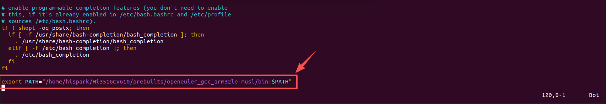
- 在命令行运行下面指令，如果有工具链版本号输出表明工具链安装成功
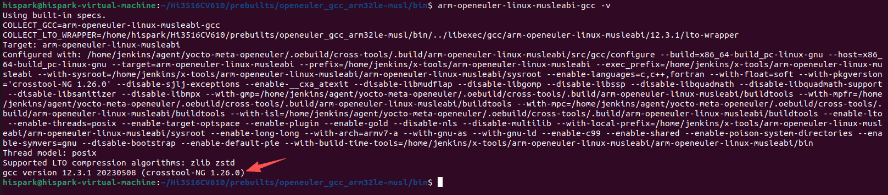
- 至此Hi3516CV610社区版SDK的编译环境已经搭建完成
3、SDK编译
3.1、全量编译
- 可以使用如下命令全量编译，编译产物包括boot、kernel、rootfs、mpp驱动以及mpp sample。
- 编译产物在output/dmeb/目录下，包含如下子目录：
3.2、单独编译
- 也可以将boot/kernel/rootfs、ko和sample单独编译，适用于改动其中部分后，针对改动部分进行编译。
3.3、DEBUG模式
- 在日常开发过程中，经常涉及到串口烧录，需要使用DEBUG模式，因此要在编译中加debug参数，主要是涉及到uboot/kernel。
3.4、PACK模式
- 默认情况下，mpp的内核态驱动ko和用户态lib库是不打包到文件系统的，如果需要打包到文件系统，需要指定pack参数。
它会做如下几个事情：
1、将ko和lib库分别打包到文件系统的/ko和/usr/lib下;
2、将媒体服务进程sdk_server（用于提供媒体服务）和sample_vie打包到文件系统的/usr/bin下;
3、在系统启动最后，将ko插入到系统，将sdk_server进程拉起来，为应用程序运行做好准备;
- 日常调试命令推荐
3.5、构建命令参考
| 命令 | 效果 |
|---|---|
./build.sh dmeb boot |
仅编译 U-Boot、内核、根文件系统 |
./build.sh dmeb sample |
仅编译 MPP 示例程序 |
./build.sh dmeb ko |
仅编译 MPP 内核驱动模块 |
./build.sh dmeb all |
全量编译（上述三项） |
./build.sh dmeb all pack |
全量编译并注入到根文件系统镜像 |
./build.sh dmeb all debug |
全量编译（debug 模式） |
./build.sh dmeb all debug pack |
全量编译 debug 模式并注入到根文件系统 |
./build.sh dmeb clean |
清理所有编译产物 |
4、搭建虚拟机环境
4.1、软件获取
（注意：以下软件包仅用于教学，未经允许不得转发用于商业用途）
| 工具名称 | 用途说明 | 版本要求 | 获取渠道 |
|---|---|---|---|
| VirtualBox | Windows安装Ubuntu系统所需的虚拟机 | 6.1.36版本 | VirtualBox下载链接 |
| Ubuntu22.04 | 编译环境所需的Linux系统 | 22.04版本 | Ubuntu22.04下载链接 |
| VScode | 代码阅读和编辑所需的IDE工具 | 1.70.1版本 | VScode下载链接 |
| MobaXterm | 终端调试工具 | V22.1版本 | MobaXterm下载链接 |
4.2、安装VirtualBox虚拟机
- 双击VirtualBox-6.1.36-152435-Win.exe 安装包，点击下一步，安装VirtualBox。

- 点击浏览按钮，修改VirtualBox的安装路径，然后点击确定按钮，再点击下一步。

- 当出现下面的界面，点击下一步。

- 当出现下面的界面，点击是。

- 当出现下面的安装界面时，点击安装。

- 点击完成，即可完成VirtualBox的安装。

4.3、在VirtualBox中安装Ubuntu22.04
- 注意：本文以VirtualBox为例，开发者也可以使用其他虚拟机，以自己的开发习惯为准。
步骤1：导入Ubuntu22.04镜像到VirtualBox
- 打开VirtualBox，点击新建

- 修改虚拟机的名称为hispark，然后修改Ubuntu系统的安装文件夹（因为软件默认安装在C盘，我们最好是把安装路径修改为其他磁盘），把类型配置为linux,然后版本选择 Ubuntu(64-bit)，然后再点击下一步。

- 修改Ubuntu的运行内存大小为4G，然后点击下一步。

- 选择现在创建虚拟硬盘，然后点击创建按钮。

- 选择VDI（VirtualBox磁盘映像），然后点击下一步。

- 选择动态分配，然后点击下一步。

- 修改磁盘空间大小为100GB，然后点击创建按钮。请至少给Ubuntu分配100G的内存空间，否则后面的步骤会因为内存不足出现错误。

- 点击设置按钮，选择常规选项，在高级选项处，把共享粘贴板和拖放都设置为双向，然后点击OK按钮。

- 点击VirtualBox的设置，然后点击系统，选择处理器，把处理器的数量改为4。
- 注意：如果您的处理器小于等于4个的话，请把处理器数量改小一些。

- 点击网络，选择网卡2，勾选启动网络连接，选择仅主机网络，点击OK。

- 点击设置按钮，选择存储，然后选择没有盘片，点击光盘按钮，点击选择虚拟盘。

- 选择下载好的Ubuntu22.04的镜像文件，然后点击打开按钮。
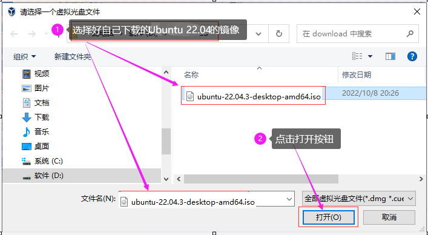
- 然后点击设置的OK按钮。

- 选择USB设备，把启动USB控制器的勾选去掉，禁用USB设备，然后点击OK（部分电脑可能无法进行这一步操作，可以先跳过）

- 点击启动，启动Ubuntu系统

步骤2：Ubuntu系统的安装
- 选择中文(简体)，然后点击安装Ubuntu。

- 如果您安装Ubuntu的时候和我一样，因为分辨率问题，导致界面显示不全，无法看到下面的按钮，您需要按住组合键
Ctrl+Alt+t打开终端面板，然后输入xrandr，查看一下支持的分辨率。
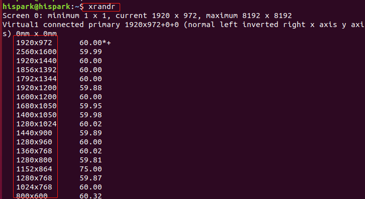
- 我们这边以1920x1200为例，输入
xrandr -s 1920x1200后敲回车，修改Ubuntu的分辨率。

- 选择Chinese，然后点击继续按钮。

- 将安装Ubuntu时下载更新的勾选去掉，然后点击继续按钮。

- 点击现在安装。

- 点击继续按钮。

- 选择上海，然后点击继续按钮。

- 设置好账号和密码，点击继续按钮，此处的账号和密码即为您Ubuntu的登录所需的账号和密码。
- 请按照本文的配置来，账号为：hispark，密码为：hispark。

- 开始安装各种软件。

- Ubuntu安装完成后，点击现在重启按钮。

- 如果在重启的过程中出现提示please remove the installation medium，可以直接点击关闭按钮，选择强制退出，点击OK即可。


- 点击virtualbox的设备，点击安装增强功能

- 当弹出 弹窗询问是否运行自启动软件时，点击取消。

- 此时左边任务栏会多出一个光盘一样的图标，点击并打开光盘图标，进入该文件夹内。

- 在光盘文件夹的空白处，鼠标右键，点击在终端打开。

- 执行下面的命令，进行增强功能的安装。


- 安装成功后，在终端执行 reboot命令，重启一下Ubuntu

步骤3：更新软件
- 当Ubuntu重启之后，点击Ubuntu桌面左下角九个点图标，然后打开软件和更新图标。

- 点击Ubuntu软件，在下载自处点击下拉框，选择其他站点。

- 在中国下方选择阿里云，然后点击选择服务器。

- 此时弹出认证对话框，输入您的Ubuntu登录密码，本文为hispark。

- 点击关闭按钮，然后有对话框时，点击重新载入，此时会有一段时间的软件更新，耐心等待即可。

- 更新完成后，在Ubuntu的桌面，点击鼠标右键，点击在终端打开，打开终端窗口。

- 在终端输入下面两条命令，进行软件更新

步骤4：配置Ubuntu的SSH服务
- 执行下面的命令，下载SSH-server

- 执行下面的命令，启动Ubuntu ssh服务

步骤5：安装MobaXterm并连接到Ubuntu
- 在Windows 主机，解压MobaXterm_Installer_v22.1.zip 压缩包，然后双击解压后的MobaXterm_installer_22.1.msi，进行MobaXterm的安装。
- 一直点击下一步，即可安装成功。

- 执行下面的命令，安装net-tools工具

- 执行下面的命令，查看Ubuntu的IP地址，本文Ubuntu的IP地址是 192.168.56.106

- 打开刚在Windows上安装好的MobaXterm，点击左上角的Session图标，当弹出新的对话框时，点击左上角的SSH图标，然后输入你自己Ubuntu的IP地址，勾选上 Specify username，并填写好你Ubuntu的用户名，点击OK即可。

- 点击OK之后，若需要您输入登录密码，直接输入您Ubuntu的用户登录密码即可进入Ubuntu的终端界面。

步骤6：配置Ubuntu的Samba服务
- 在Ubuntu终端执行下面命令，安装Samba服务。
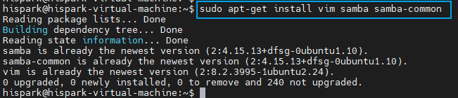
- 在Ubuntu终端执行下面命令，添加Samba共享文件读写权限。
- 在Ubuntu终端执行下面命令，创建Samba账户，后续终端会要求输入Samba账号密码。
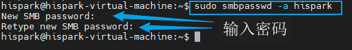
- 在Ubuntu终端执行下面命令，修改sambe的配置文件。
- 在文件末尾添加如下Samba账号内容。
[hispark]
comment = share folder
browseable = yes
path = /
public = yes
available = yes
guest ok = no
writable = yes
valid users = hispark
create mask = 0777
directory mask = 0777
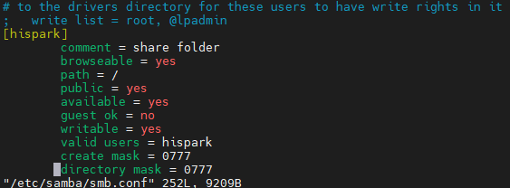
- 在Ubuntu终端执行下面命令，重启samba 服务器生效。
步骤7：映射网络驱动器
- 点击Windows的此电脑，鼠标右键，选择映射网络驱动器

- 输入\\Ubuntu的IP地址，然后点击完成，输入账号(hispark)和密码 (配置Samba服务设置的密码）
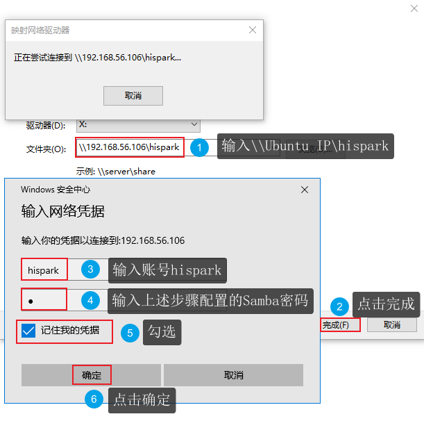
- 这样docker的根目录就能够在Windows的磁盘下面显示了。这样您就可以方便的进行Windows和docker之间的文件共享了